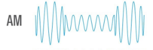

Ondas AM
Las ondas AM (Amplitud Modulada) son un tipo de onda utilizada en redes y comunicaciones para transmitir información mediante la modulación de la amplitud de una onda portadora de alta frecuencia con una señal de información de baja frecuencia. Esta modulación permite "esconder" la información que se desea transmitir dentro de la onda portadora, la cual puede viajar a través de un medio físico como el aire o el cableado para llegar a un receptor.
